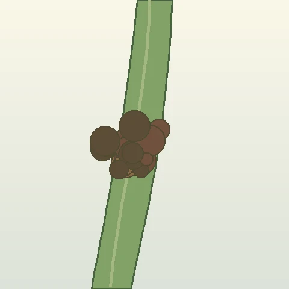

Crown gall
Dark swellings on stems
This is one possible explanation. Compare the signs below with those on your plant.

What to look for
Record whether swellings develop at the crown, on shoots or at old wounds, and inspect the surface texture.
Possible causes and next steps
Callus and galls may look alike. Avoid cutting into an unknown swelling and seek identification on the host species.